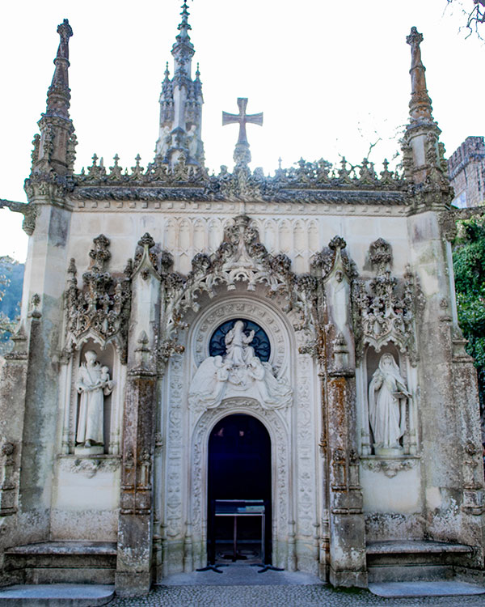
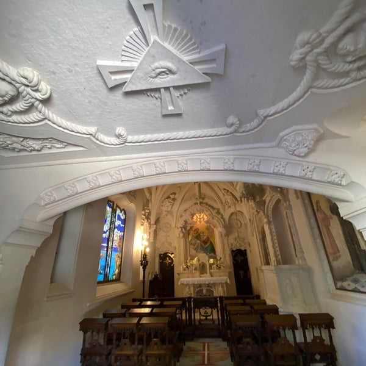
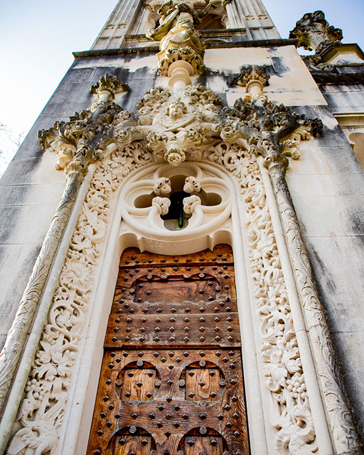
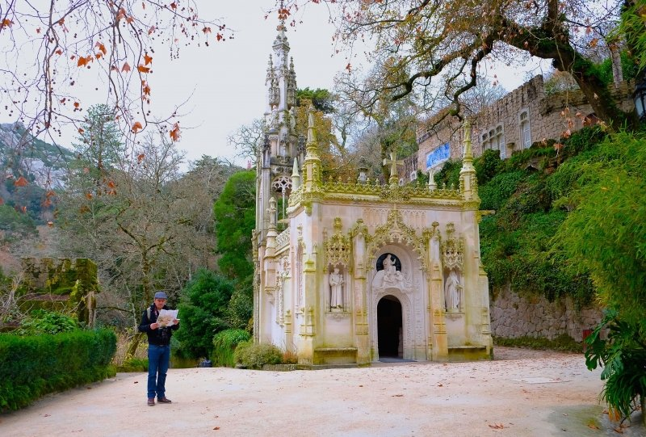
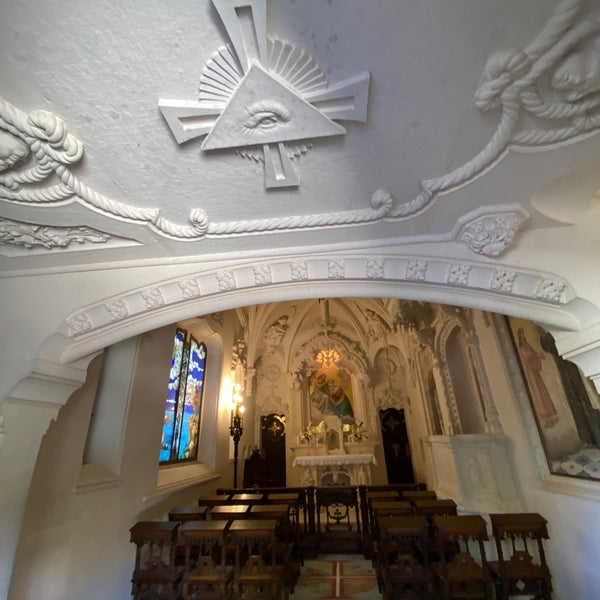
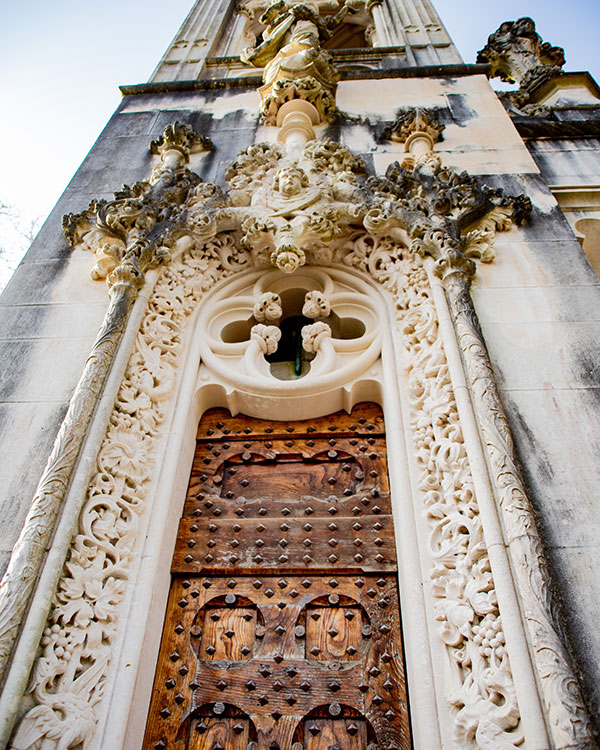
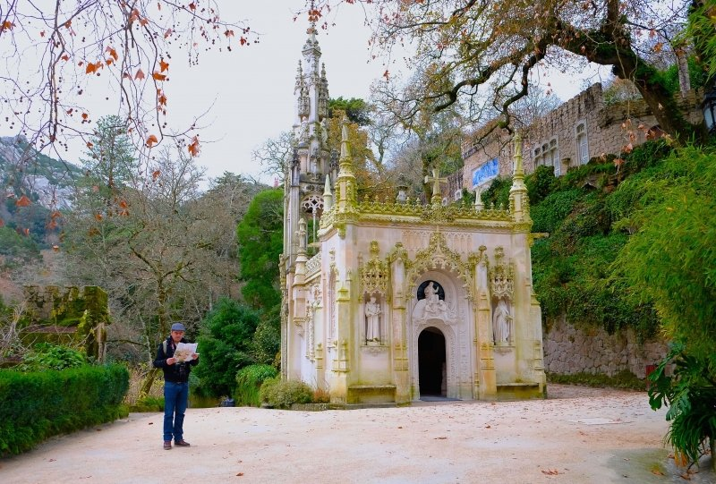
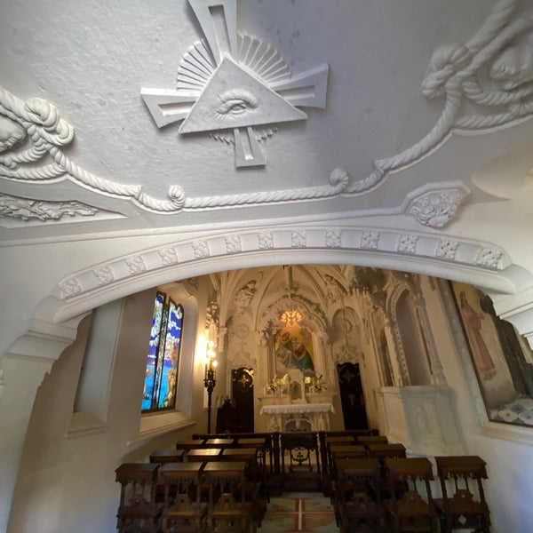
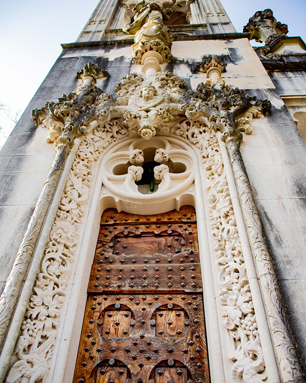
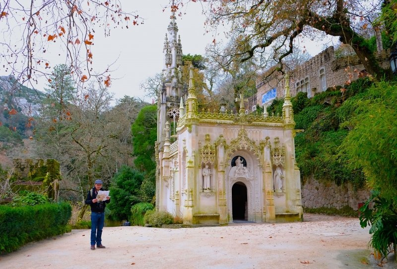

 








Capela
A Capela é uma obra-prima da arte e arquitetura manuelina, construída entre 1903 e 1910. É um manifesto da fé e convicções religiosas da família Carvalho Monteiro, e evidencia um rico programa iconográfico com tema central no ciclo mariano. A capela foi construída por canteiros de grande mérito, artisticamente orientados por António Augusto Gonçalves. O mobiliário foi da responsabilidade do entalhador Júlio da Fonseca, composto por um cadeiral e cerca de 20 cadeiras com genuflexório. A cena da Anunciação é um elemento escultórico integrado na rosácea sobre a entrada da fachada principal.